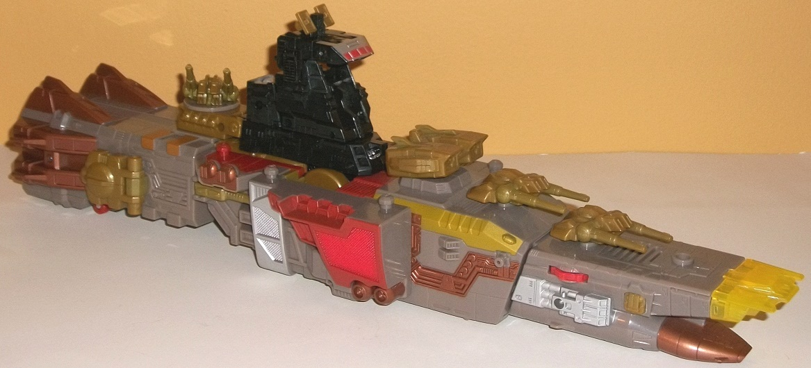
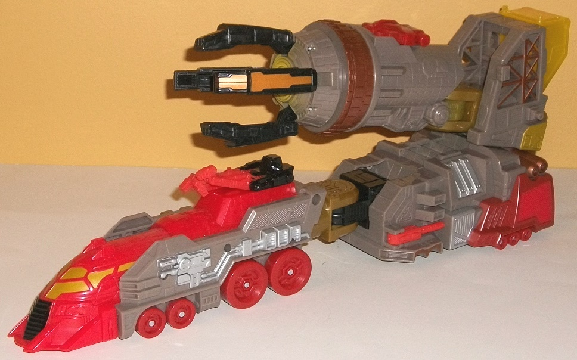
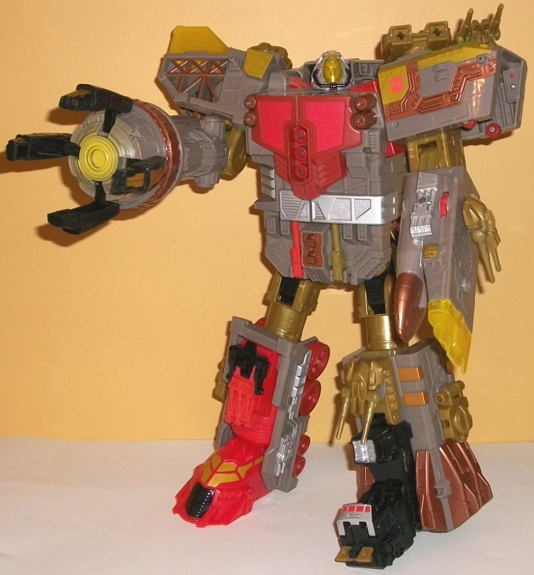

Allegiance
: Autobot
Size
: Supreme
Price
: $100 U.S.
Difficulty of Transformation
: Easy
Color Scheme
: Dull moderately light
brownish gray, light red, black, milky greenish gold, dark metallic bronze,
and some translucent yellow, light sky blue, silver, and dull greenish
gold
Rating
: 8.2
(NOTE: Because this is a repaint, this is not a full-blown review. This mainly covers any changes made to the mold and the color scheme, and merely compares it to Energon Omega Supreme. For a review on the mold itself, read the review of Energon Omega Supreme here .)


This "Year of the Snake"
version of Omega Supreme is actually meant to be a bit of a deco-homage
to how he appeared in the
War for Cybertron
video
game, and also is just generally a bit closer to his G1 color scheme than
Energon Omega Supreme, as well. This means that his main color is gray,
which unfortunately isn't exciting, though it's not the light milky shade
of gray that's plagued far too many TFs, so at least that bullet was dodged.
The other main colors on him are: black-- not an exciting color either,
but it does give the toy a bit of a darker shade for the other colors to
play off of; metallic copper, which looks very nice against the gray and
fits thematically with the gold; said gold plastic, which looks okay but
has a weird greenish tint to it that makes it just a tad ugly-- I wish
they would have gone for a "purer" gold than this shade; and light red,
which is the signature "light color" that works pretty well on certain
areas, such as the front of his "train-crane" vehicle mode portion, while
providing a light contrast color to the other colors on the toy when used
sparingly, as it is on the rest of the mold. There's also several "accent"
colors, including a fair amount of silver that acts as a nice metallic-yet-neutral
color for the other colors to play against (and which is almost a prerequisite
color on TFs, really), and a rather interesting shade of translucent yellow,
which is see-through yet in a milky manner, almost as if it's made of "energon"--
a quite nice touch. He also has some paint that quite closely matches his
sickly greenish gold plastic. All of these colors together would have made
a smaller toy look too busy color-wise, but with a toy this large and with
the paint apps spread out fairly evenly and not all clustered into a tiny
space, it all comes across looking fairly nice, overall, with no major
details unpainted.

Omega Supreme has had
a few mold changes made to bring him slightly more in line with his War
for Cybertron version. The first is that the head sculpt has been completely
redone to make it more accurate to the game, complete with the "gas mask"-like
contraption for a chin and a translucent yellow mask, which can indeed
be lifted up to reveal his gold-with-blue-optics face, all of which is
sculpted quite well. However, this does come at the cost of the head no
longer detaching to form a Headmaster (the head just folds under the bottom
of the vehicle mode). The bigger mold change is that Omega's lower right
arm is completely new, most notably with a spinning four-pronged claw hand
(it doesn't spin automatically; you do have to twirl it manually), with
each claw articulated at two points near the base. It's a pretty neat addition,
and makes Omega's "crane mode" look more like a mobile cannon mode. The
electronic features have also been gutted from the toy. No other mold changes
have been made to Omega Supreme, so he can still do that weird "combination"
thing with the
Energon Optimus Prime
mold if
you so desire.
"Year of the Snake"
Omega Supreme is a nice way at giving fans a "half nod" at the new video
game version of him without going through the expense of making an entirely
new mold for the big guy. Unfortunately, though nicely done, the remolding
isn't really extensive enough to make him pass as his WfC version even
at a casual glance, but his coloration is pretty accurate and decent, with
plenty of paint apps to help break things up. (I do wish his greenish gold
plastic looked less sickly, though.) The high price is honestly the biggest
drawback-- I realize inflation happens, but asking $100 for a toy that
was half that price less than a decade before is a bit hard to swallow,
and thus I'd only recommend him for big Omega Supreme and/or War for Cybertron
collectors.
Review by Beastbot